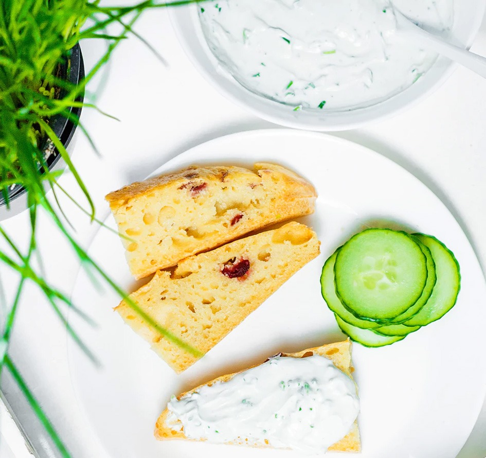
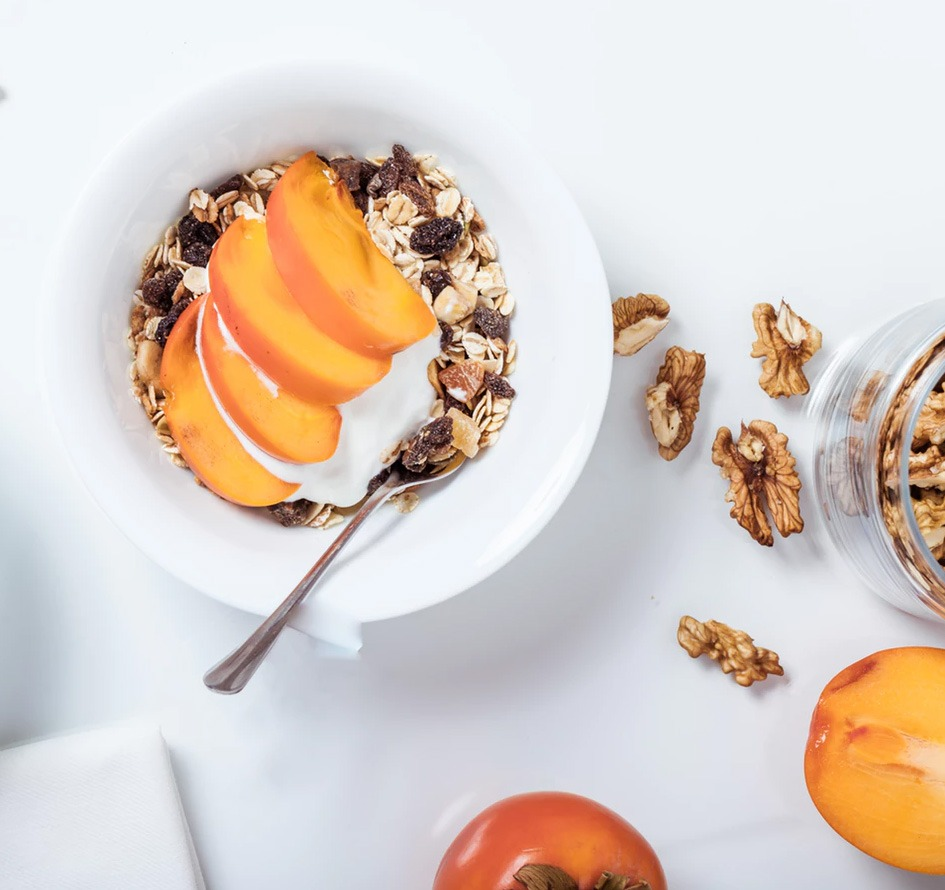
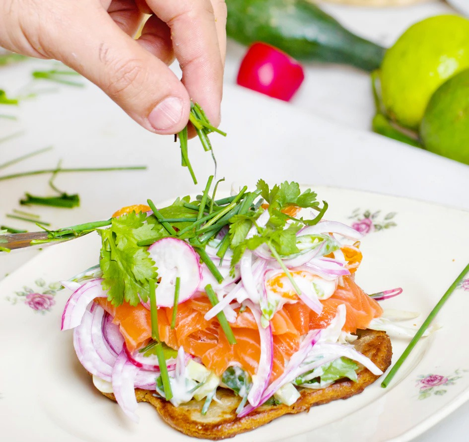
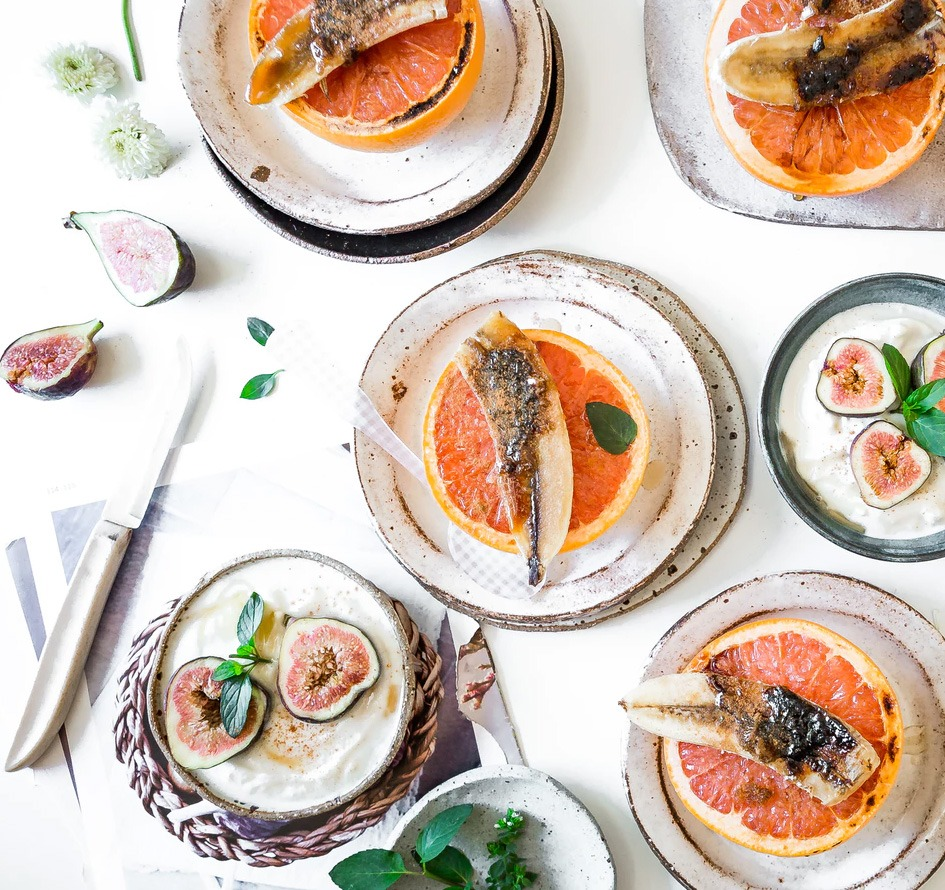
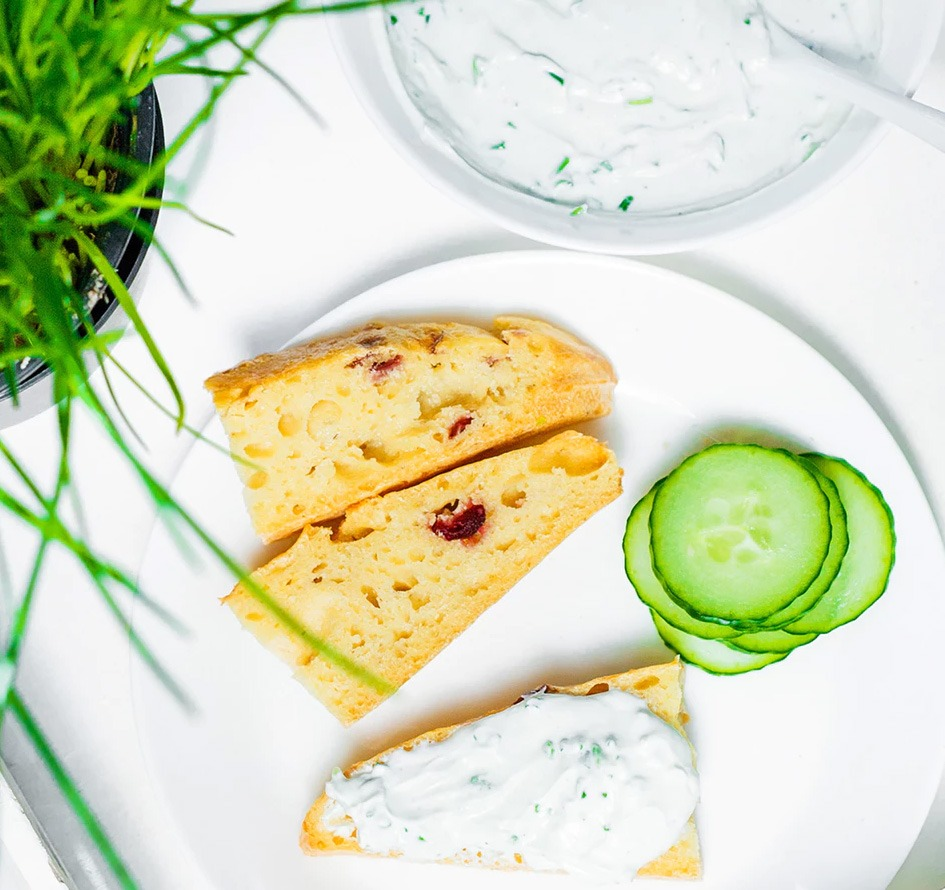
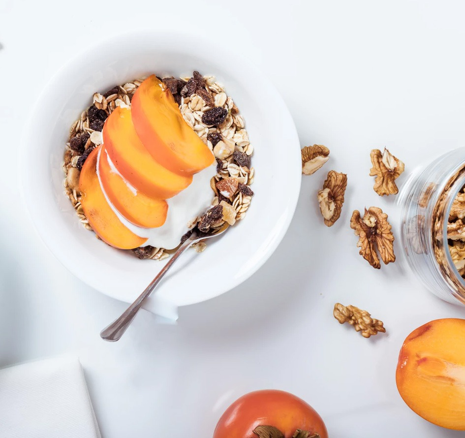
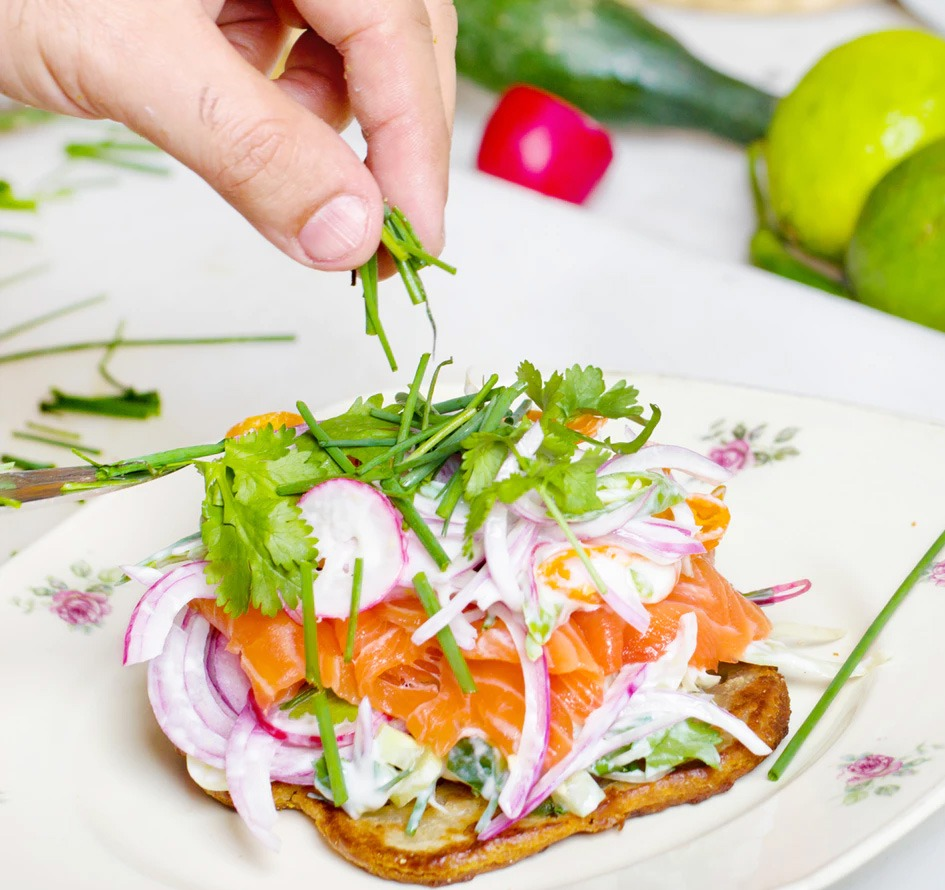
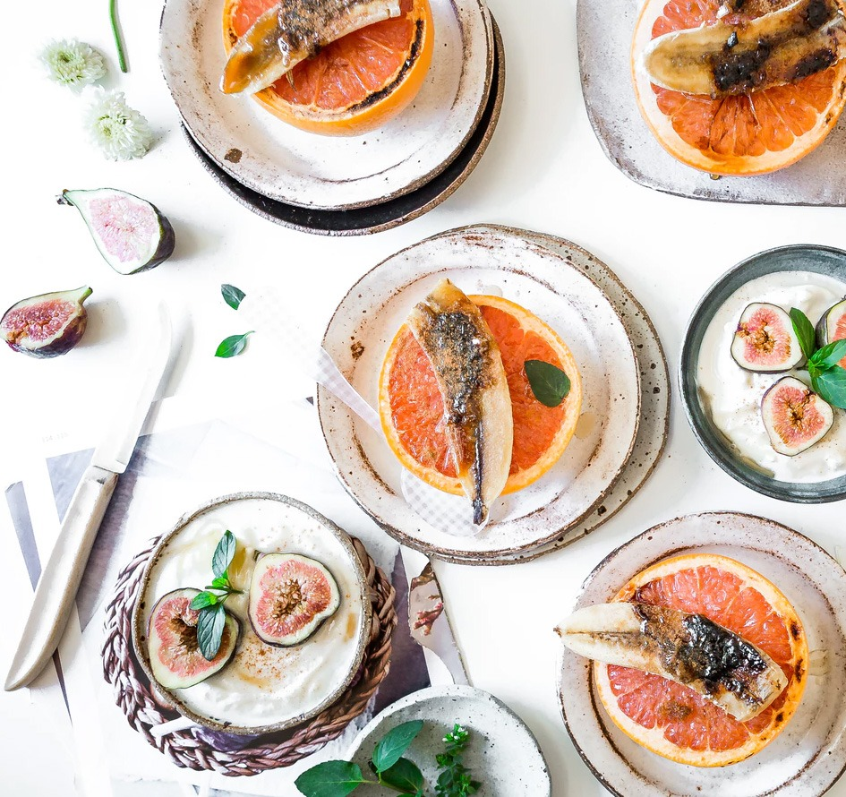

Drink apple cider vinegar
According to Sepel, adding one or two tablespoons of apple cider vinegar to a large bottle of water
Keep to regular mealtimes
This may seem like an obvious suggestion, but eating your meals at regular, spaced out intervals
Eat fruit in the morning
We’re told that we should eat five portions of fruits and vegetables a day in an effort to maintain a healthy lifestyle
Lower sugar recipes
As we go about our hectic, busy days, it can be very easy to resort
to a sugary snack
midway through the afternoon to keep your energy levels elevated.
 







New ideas to life
While it is important to have naturally occurring sugars in your
diet, many foods contain harmful added sugars that contain no
nutritional
value. According to a study conducted by the University of Florida,
the brain releases heroin-like chemicals called endogenous
opioids
when an individual indulges on sweet, salty or fatty foods.
Eat plenty of protein
Eating a healthy dose of protein, such as red meat, organic chicken and fish, in addition to healthy fats including avocado and coconut oil can help keep
Eat wholesome snacks
One of the reasons why so many people end up eating unhealthy snacks is simply because they don’t consider taking the time to source healthier alternatives.
Consume magnesium
Sepel is a strong proponent of magnesium, personally taking approximately 500mg a night to help moderate her blood glucose levels. Magnesium can also be naturally found
Practise mindfulness
Sugar cravings are often connected with overall stress levels, which is why practising mindfulness could prove extremely beneficial. Take some time out of
Have a healthy afternoon snack
The majority of people in the working world are likely familiar with the mid-afternoon slump.
Include lots of fibre in your diet
Fibre is known to help aid with digestion. However, that’s not its only benefit
Health is the most precious
While it is important to have naturally occurring sugars in your diet, many foods contain harmful added sugars that contain no nutritional value.
According to a study conducted by the University of Florida, the brain releases heroin-like chemicals called endogenous opioids when an individual indulges on sweet, salty or fatty foods.
With that in mind, mastering control over your sugar cravings is evidently far easier said than done.
Read More